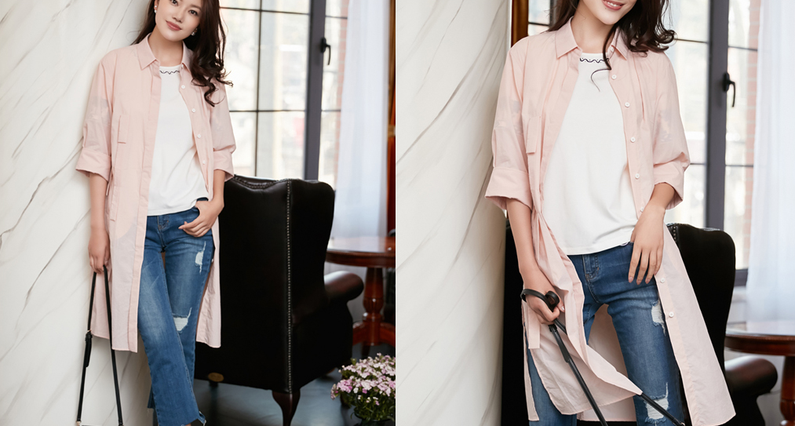

美丽说，我把春天给你
花开有期，时不待人，准备好行囊，就该出发了。既然是樱花季，怎么能少了樱花粉呢，浅浅的，浪漫中带着一点收敛却多了一份活力。JZ玖姿短款樱花粉色纸风衣灯笼袖口蓬出少女感，与文青系带长裙，撞出别样清新

长款纸风衣的显著优点在于足够轻薄飘逸，尤其侧边开衩之后，便具备了裙摆的功能，伫立树下，望着无数樱花倚着风劲离开枝头，一个转身，衣据飞扬，乘兴，与它们共舞一曲吧。

知道吗，樱花可不止粉色一种，白的，红的，各有姿态，JZ玖姿红白解构印花连衣裙将樱花的纯粹与热烈集于一身，抽取式腰绳，既是装饰，亦能达到修饰身形的效果，漫步花路，优雅于心。